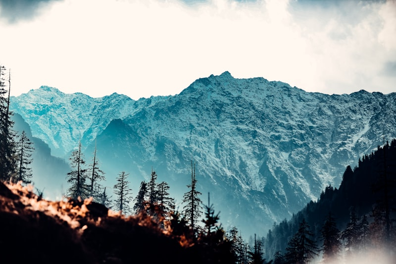

Rute Paling PopulerGunung Bromo Sunrise Tour
Saksikan matahari terbit legendaris dari Bukit Penanjakan dengan latar kaldera Tengger. Dilanjutkan melintasi Lautan Pasir Berbisik dan menaiki anak tangga menuju bibir Kawah Bromo yang megah menggunakan armada Jeep 4x4 khas Malang.
Detail Paket & Booking →